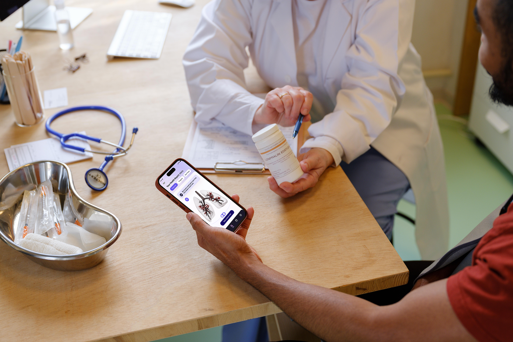
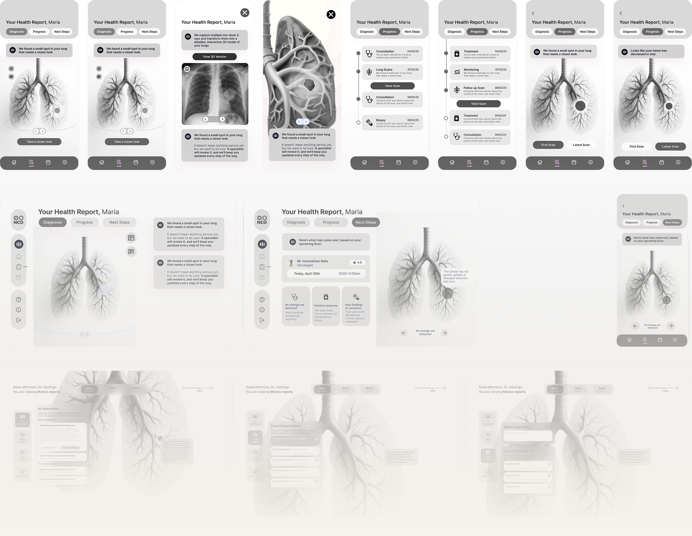
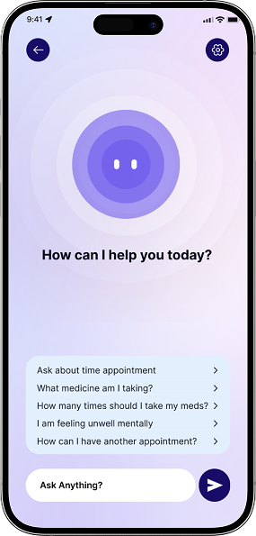
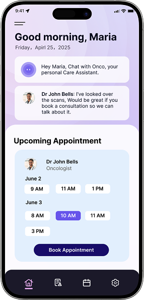
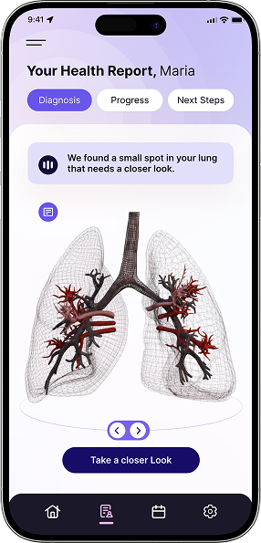
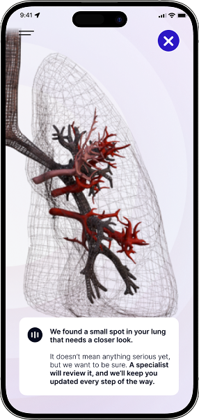
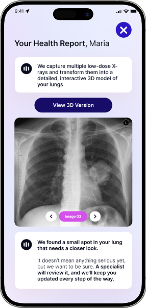
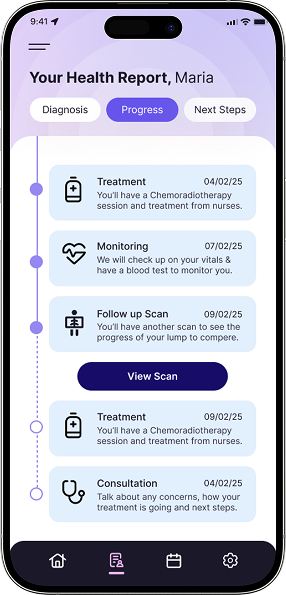
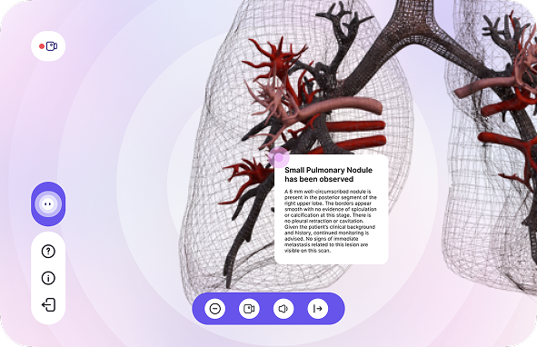

Onco
A cross-device medical imaging support system — bridging the gap between remote cancer patients in rural Australia and the specialists they can't easily reach.

The Problem Worth Solving
In rural South Australia, the nearest cancer specialist can be a six-hour drive away. Imaging equipment is concentrated in major city hospitals. When Maria — a 55-year-old woman from a remote farming village — receives a scan result, she often can't understand it, can't easily reach her doctor to ask questions, and has no way to track her treatment progress between appointments.
This isn't a rare edge case. Rural cancer patients in Australia face significantly longer wait times and lower five-year survival rates than their metropolitan counterparts. We were briefed by a real client stakeholder to explore how a digital platform could close this gap — not by replacing clinical care, but by giving patients like Maria more agency and continuity within it.
A note on scope: Onco was developed as a concept project in direct response to a real client brief. All design decisions were made against genuine clinical constraints and evaluated by our client partner.
Who We Designed For
We identified two distinct user groups whose needs are interdependent: the patient who needs clarity and emotional reassurance, and the oncologist who needs efficiency and reliable data. Designing for one without the other would break the system.

Has 3 kids between 12–24, 2 older being daughters and youngest a son. Lives with extended family, where they all work in the farm to make a living. Health condition: She is suspected to be an early-stage lung disease. There is a history of lung cancer in the family.
- A clear and understandable way of presenting medical images
- Maintain a remote communication channel with the doctor
- Receive continuous reminders and psychological support during the treatment process
- Limited access to specialised care (nearest hospital is a six-hour drive)
- Fear of complex medical procedures and unfamiliar medical imaging
- Need for clear, understandable health information
Be responsible for image interpretation, formulating treatment plans and following up on the patient's condition. At present, communication is often poor due to geographical restrictions and system fragmentation. A tool that can be quickly integrated into AI analysis, annotated images, and collaborate with other systems is needed.
Our Design Approach
The Design

 Onco Logo
Onco Logo
 Onco Logo
Onco Logo










Designing for commercial reality
If Onco were to pursue a real-world go-to-market path, the most viable model would be B2B2C: licensed to hospitals or regional health networks, who then provide access to patients as part of their care pathway. This removes the friction of patient acquisition and aligns with how healthcare technology is actually procured in Australia. Understanding this shaped how we prioritised features — anything that reduced administrative burden on the clinical side was treated as a priority.